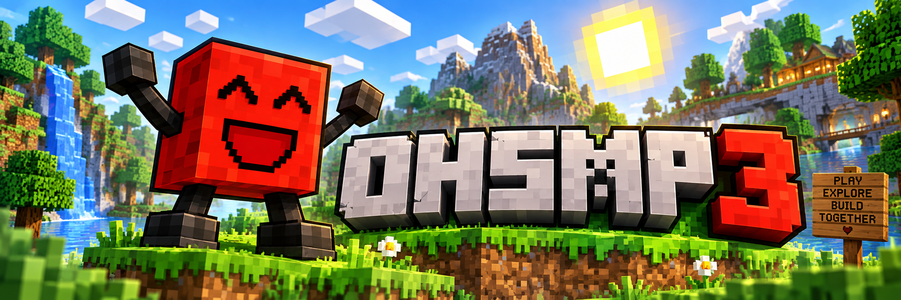

Server IP

Season III is live
Your world.
Your story.
A community Minecraft server for OHS students.
play.ohsmp.com
The essentials
Server information
Everything you need before stepping through the portal.
Version
1.21.11 Java
Server
Fabric
Spawn radius
16 chunks
World border
±1,000
Increasing weekly
Nether
Open
The End
Closed
Opening September 21
Server location
Toronto, Canada
A note on connection
The server runs on home Wi-Fi. Starlink is mostly good, but it can occasionally have a rough day. If that happens, there may not be an immediate fix—thanks for being patient and grateful that we have a server.
Keep it fun
Rules & punishments
The rules are extremely simple.
No hacking
This includes x-ray, freecam, “quality of life” clients, and similar tools. The anticheat may not stop a cheat immediately, but it records activity and notifies the admins.
Be respectful
Chat is visible to the admins. Rude, disrespectful, or inappropriate behavior can result in a ban. Be nice or don’t play.
No spawnkilling
Violations are decided at the admins’ discretion.
Protect public builds
Do not grief spawn or public builds. Adding sand, water, creepers, or other damage and calling it an “improvement” will not cut it.
Don’t cause lag
Never intentionally lag or crash the server.
No loopholes
Loopholes will be patched, and exploiting them can still get you banned.
Use common sense
If you have to ask whether something breaks a rule, it probably does.
Respect the admins
Being rude to the admins can result in a ban.
Warning ladder
Actions have consequences.
Punishments are at the admins’ discretion. Multiple warnings may be issued at once when the violation is serious. Bans are non-appealable.
-
1
One warning
A random item is removed from your Ender Chest or inventory.
-
2
Two warnings
3-day ban and armor removed.
-
3
Three warnings
7-day ban, inventory cleared, and Nausea I for the next 12 hours of playtime.
-
4
Four warnings
14-day ban, inventory and Ender Chest cleared, and Slowness I for the next 24 hours of playtime.
-
5
Five warnings
1-month ban, inventory and Ender Chest cleared, and a permanent Curse of Binding pumpkin.
-
6+
Six or more
Permanent ban.
Vanilla, enhanced
Plugins & mods
Helpful upgrades, quality-of-life features, and a few twists.
AFK Display
Displays [AFK] next to your name if you do not move for more than 5 minutes.
Age Lock
Name a mob “age_lock” and it will remain its current age.
Anti-Enderman Grief
Prevents Endermen from picking up or placing blocks.
Armour Statues
Put Armour Stands in custom poses.
Cauldron Concrete
Drop concrete powder in a cauldron with water to harden it instantly.
Client Detector
Detects hacked clients such as Meteor and automatically bans them. It is custom-built, with no public information to circumvent it.
Clumps
Groups XP orbs to reduce lag and speed up XP absorption.
Combat Log
Kills players who log out during combat and disables firework use during combat.
Custom Nether Portals
Build Nether Portals in custom shapes and sizes.
Distant Horizons
With the client mod installed, you can see much farther.
Essential Commands
Adds /home (4 max), /back, /tpa, /rtp, and /spawn.
Explosion Rebalance
End crystals deal 20% damage and respawn anchors deal 30%. Subject to change.
Grim Anticheat
Monitors cheating alongside additional anticheat systems. Don’t try to get around it.
Husks Drop Sand
Causes Husks to drop sand.
Mini Blocks
Create miniature versions of blocks with a Stonecutter.
Moog’s End Structures
Adds vanilla-inspired structures to make the End more interesting.
More Effective Tools
Assigns effective tools to blocks that lack one—for example, pickaxes for glass and axes for cactus.
More Mob Heads
Mobs have a chance to drop their head on death.
Multiplayer Sleep
Only one person needs to sleep to skip the night.
Player Head Drops
Players drop their head on death.
Silence Mobs
Name a mob “silence me” to stop it from making noise.
Simple Voice Chat
The server supports proximity voice chat when you install the client mod.
Storm Channeling
Throw a Channeling trident straight up from the top of the world to start a thunderstorm. Uses 60% durability.
Timber
Mine a full tree by breaking a log with an axe.
Track Statistics
Tracks item statistics.
XP Bottling
Convert levels into XP bottles by right-clicking an Enchantment Table with a bottle.
No features match that search.
Ready to play?
Join the whitelist.
OHSMP is whitelisted for OHS students. Submit the form and you’ll be added soon after—or whenever an admin is home.